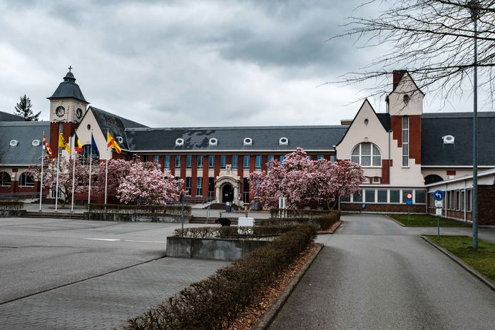

Dag 1: maandag
inleiding
Maandag was de eerste dag van mijn observatiestage bij de gemeente Zoersel. Ik moest om half negen bij het onthaal zijn om de dag te beginnen. Daarna kreeg ik dan een rondleiding door het gebouw. Na de rondleiding kreeg ik een inleiding over wat er allemaal gedaan werd bij de It in de gemeente Zoersel. Deze inleiding was gedaan rond de middag. Na de middag kon ik observeren en begrijpen hoe de besproken concepten ook echt worden toegepast. Deze concepten waren onder andere het herstellen van wachtwoorden, het instellen van een laptop voor een stagiair en simpele problemen oplossen.
